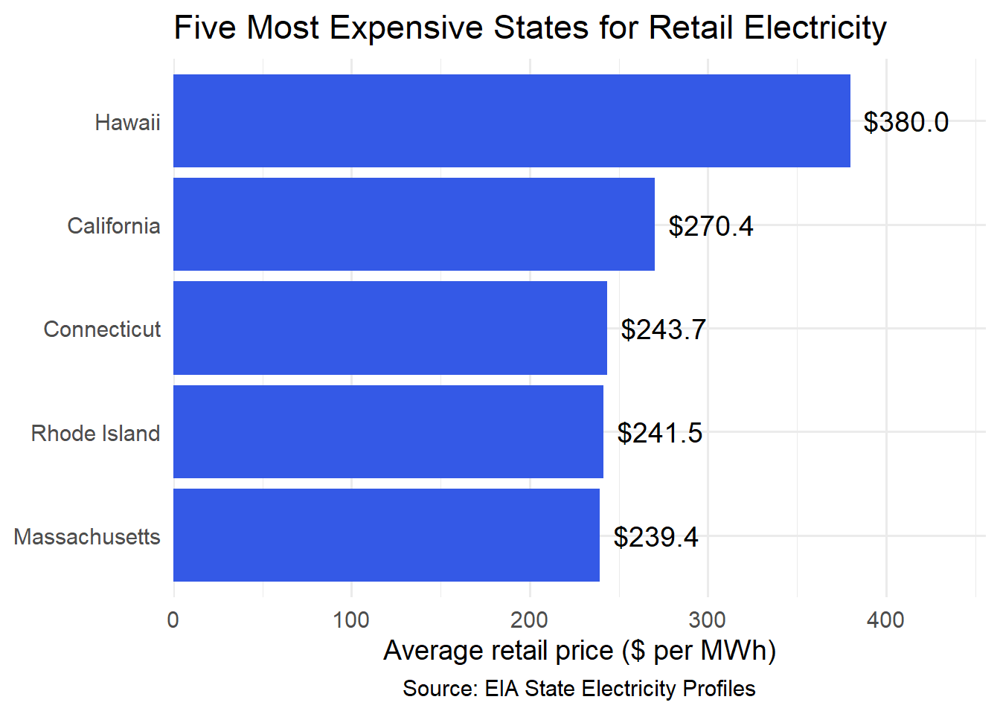
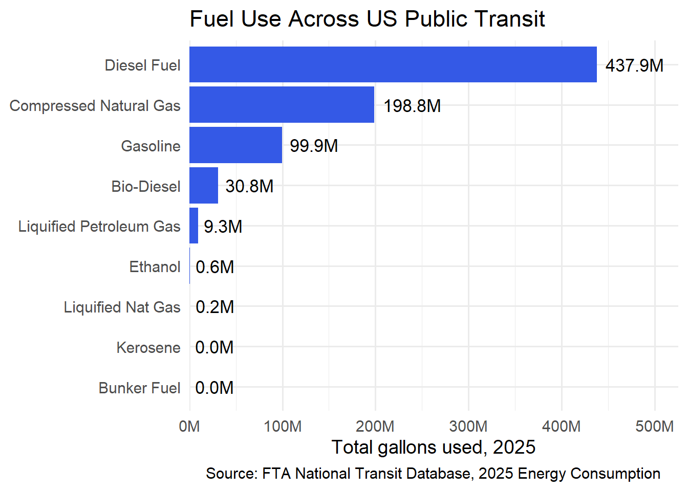
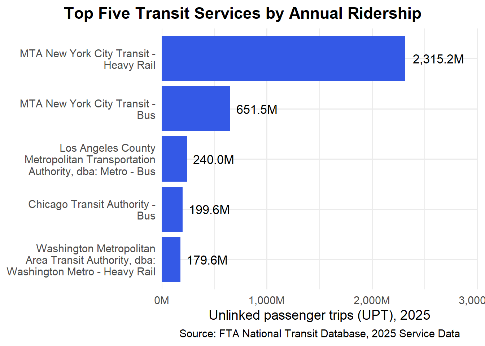
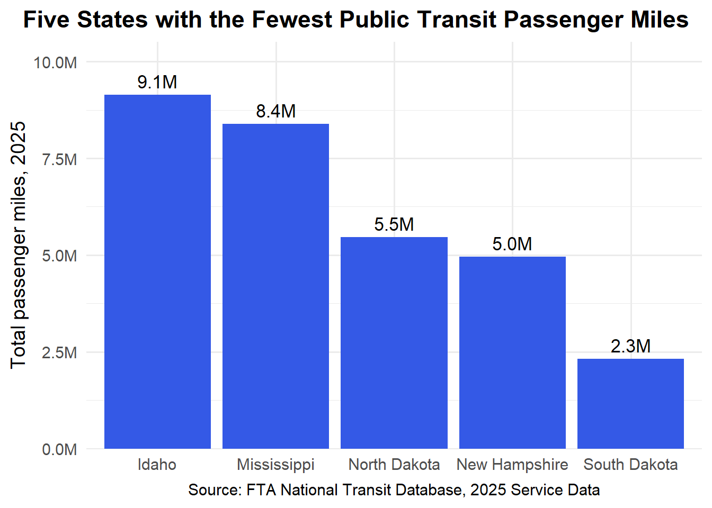
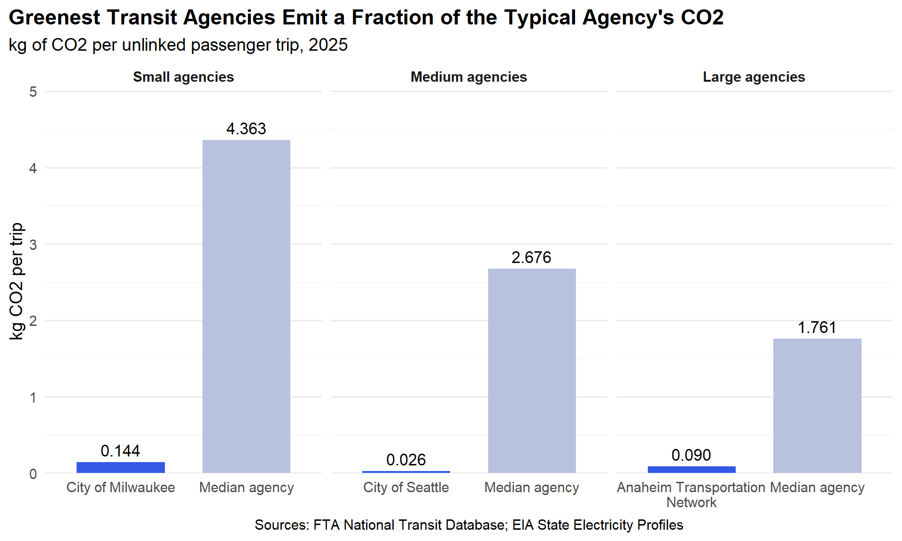
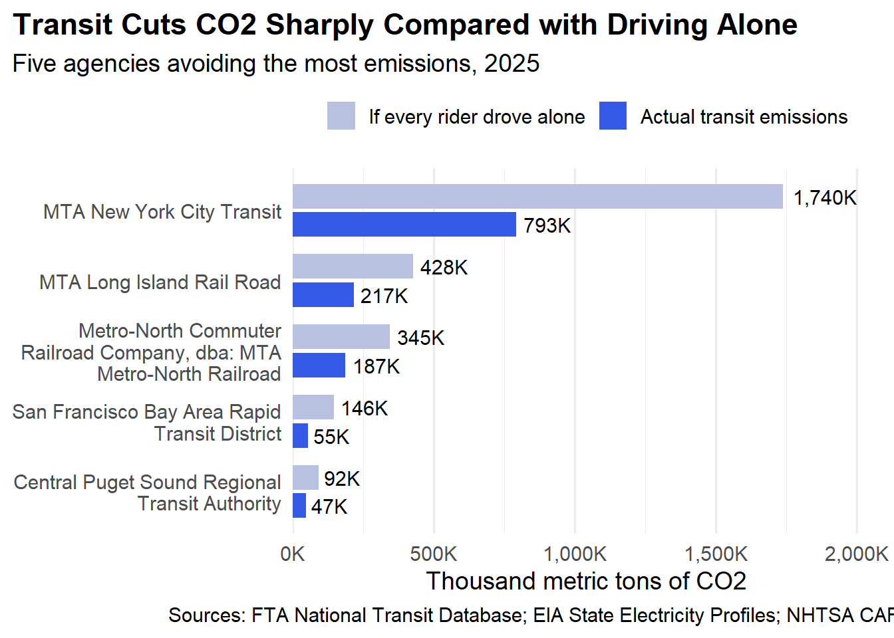

Mini-Project-2 Identifying Environmentally Responsible US Public Transit Systems
Author
Naim Yilmaz
Published
2026-11-07
Data Acquisition And Preparation
Before proceeding with further analysis, we need to collect three essential datasets: EIA State Electricity Profiles, NTD Energy Consumption, and NTD Service Data.
load_ntd_energy <-function(){library(readxl)library(httr2)library(tidyverse)library(fs)# Create 'data/mp02' directory if not already present DATA_DIR <- fs::path("data", "mp02") fs::dir_create(DATA_DIR, recurse=TRUE) NTD_ENERGY_FILE <- fs::path(DATA_DIR, "2025_ntd_energy.xlsx")if(!fs::file_exists(NTD_ENERGY_FILE)){library(httr2)request("https://www.transit.dot.gov/") |>req_url_path("sites","fta.dot.gov","files","2026-09","2025 Energy Consumption_260806.xlsx") |>req_headers(`User-Agent`="Mozilla/5.0 (Macintosh; Intel Mac OS X 10.15; rv:149.0) Gecko/20100101 Firefox/149.0") |>req_perform(NTD_ENERGY_FILE) }if(file.info(NTD_ENERGY_FILE)$size <1e4){cat("I was unable to download the NTD Energy File. Please try again.\n")stop("Download failed. Please delete the corrupted file by running `unlink('data/mp02/2025_ntd_energy.xlsx')` and try again.") } to_numeric_fill_0 <-function(x){ x <-if_else(x =="-", NA, x)replace_na(as.numeric(x), 0) }read_excel(NTD_ENERGY_FILE) |>select(-c(`Reporter Type`, `Reporting Module`, `Gallons of Other Fuel`, `Other Fuel Description`)) |>mutate(across(-c(`Agency Name`, `Mode`,`TOS`), to_numeric_fill_0)) |>group_by(`NTD ID`, `Mode`, `Agency Name`) |>summarize(across(where(is.numeric), sum), .groups ="keep") |>mutate(ENERGY =sum(c_across(c(where(is.numeric))))) |>filter(ENERGY >0) |>select(-ENERGY) |>ungroup()}NTD_ENERGY <-load_ntd_energy()
Show the code
load_ntd_service <-function(){library(httr2)library(tidyverse)library(fs)# Create 'data/mp02' directory if not already present DATA_DIR <- fs::path("data", "mp02") fs::dir_create(DATA_DIR, recurse=TRUE) NTD_SERVICE_FILE <- fs::path(DATA_DIR, "2025_ntd_service.csv")if(!fs::file_exists(NTD_SERVICE_FILE)){library(httr2)request("https://data.transportation.gov/resource/4fir-qbim.csv") |>req_url_query(`$query`=paste("SELECT `_5_digit_ntd_id` AS `NTD_ID`", "`max_agency` AS `AGENCY`","`max_reporter_type` AS `reporter_type`","`max_organization_type` AS `organization_type`","`max_city` AS `city`","`max_state` AS `state`","`mode`","`type_of_service`","`max_primary_uza_code` as `uza_code`","`max_primary_uza_name` as `uza_name`","`max_primary_uza_area_sq_miles` as `uza_sq_miles`","`max_primary_uza_population` as `uza_population`","`max_service_area_sq_miles` as `service_area_sq_miles`","`max_service_area_population` as `service_area_population`","`questionable_record` as `flagged_likely_inaccurate`","`sum_unlinked_passenger_trips_upt` as `total_upt`","`sum_passenger_miles` WHERE caseless_one_of(`report_year`, '2025') limit 50000", sep=",")) |>req_headers(`User-Agent`="Mozilla/5.0 (Macintosh; Intel Mac OS X 10.15; rv:149.0) Gecko/20100101 Firefox/149.0") |>req_perform(NTD_SERVICE_FILE) }if(file.info(NTD_SERVICE_FILE)$size <1e4){cat("I was unable to download the NTD Service File. Please try again.\n")stop("Download failed. Please delete the corrupted file by running `unlink('data/mp02/2025_ntd_service.xlsx')` and try again.") }read_csv(NTD_SERVICE_FILE) |>mutate(flagged_likely_inaccurate =!is.na(flagged_likely_inaccurate))}NTD_SERVICE <-load_ntd_service()
Data Cleaning and Preparation
In this section, we recoded the two-letter transit mode codes, such as HR and MB, into their full names to make the tables easier to read and understand. We applied the same changes to both the energy consumption and service datasets to keep them consistent for our later analysis.
1-)Which 5 states have the most expensive retail electricity?
Show the code
# Five states with the highest retail electricity pricesEIA_SEP_REPORT |>slice_max(electricity_price_MWh, n =5) |>ggplot(aes(x =reorder(state, electricity_price_MWh),y = electricity_price_MWh)) +geom_col(fill ="#3459e6") +geom_text(aes(label = scales::dollar(electricity_price_MWh, accuracy =0.1)),hjust =-0.15, size =5) +coord_flip() +scale_y_continuous(expand =expansion(mult =c(0, 0.2))) +labs(title ="Five Most Expensive States for Retail Electricity",x =NULL,y ="Average retail price ($ per MWh)",caption ="Source: EIA State Electricity Profiles" ) +theme_minimal(base_size =14) +theme(plot.caption =element_text(hjust =0.5))

As we can see from the graph, Hawaii has the highest electricity price at 380 per MWh, while the next four states have relatively similar prices, ranging from 239 to 270 per MWh.
2-)Which 5 states have the ‘dirtiest’ electricity mix?
Show the code
# Five states with the dirtiest electricity mix (most CO2 per MWh)library(gt)EIA_SEP_REPORT |>slice_max(CO2_MWh, n =5) |>select(state, CO2_MWh, primary_source) |>gt() |>tab_header(title ="Five Dirtiest Electricity Mixes in the US",subtitle ="Ranked by CO2 emitted per MWh generated" ) |>cols_label(state ="State",CO2_MWh ="Lbs of CO2 per MWh",primary_source ="Primary Source" ) |>fmt_number(columns = CO2_MWh, decimals =0) |>data_color(columns = CO2_MWh,palette =c("#eef2fd", "#3459e6") ) |>tab_source_note("Source: EIA State Electricity Profiles") |>tab_style(style =cell_text(align ="center"),locations =cells_source_notes() )
Five Dirtiest Electricity Mixes in the US
Ranked by CO2 emitted per MWh generated
State
Lbs of CO2 per MWh
Primary Source
West Virginia
1,912
Coal
Kentucky
1,744
Coal
Wyoming
1,724
Coal
Missouri
1,456
Coal
Hawaii
1,426
Petroleum
Source: EIA State Electricity Profiles
West Virginia has the most CO2 emissions per MWh, according to the table. Hawaii is the only state in the top five that primarily uses petroleum for electricity; the other four use coal. This means that, in comparison to states that use alternative energy sources, those that rely significantly on coal typically have higher CO2 emissions per MWh.
3-)What are the three rarest primary energy sources in the US? What is the associated cost of electricity associated with each source and in what states are they used?
Show the code
# Three rarest primary energy sources (fewest states), with price and stateslibrary(gt)EIA_SEP_REPORT |>group_by(primary_source) |>summarize(n_states =n(),avg_price =mean(electricity_price_MWh),states =paste(abbreviation, collapse =", ") ) |>slice_min(n_states, n =3) |>gt() |>tab_header(title ="Three Rarest Primary Energy Sources",subtitle ="Ranked by number of states relying on each source" ) |>cols_label(primary_source ="Primary Source",n_states ="Number of States",avg_price ="Avg. Price ($ per MWh)",states ="States" ) |>fmt_currency(columns = avg_price, decimals =2) |>data_color(columns = n_states,palette =c("#3459e6", "#eef2fd") ) |>tab_source_note("Source: EIA State Electricity Profiles") |>tab_style(style =cell_text(align ="center"),locations =cells_source_notes() )
Three Rarest Primary Energy Sources
Ranked by number of states relying on each source
Primary Source
Number of States
Avg. Price ($ per MWh)
States
Petroleum
1
$380.00
HI
Hydroelectric
4
$122.90
ID, OR, VT, WA
Wind
4
$101.50
IA, KS, NM, SD
Source: EIA State Electricity Profiles
According to our data, the three least frequently used primary electricity sources throughout the states are wind, hydroelectric, and petroleum. With an electrical price of 380 per MWh, Hawaii is the only state that primarily uses petroleum. This is significantly higher than the average costs for states that mostly use wind 101.50 per MWh and hydroelectric 122.90 per MWh.
NTD Energy Usage
4-)Across all US public transit, visualize the amounts of each type of fuel used
Show the code
# Total gallons of each fuel type used across all US transitNTD_ENERGY |>summarize(across(starts_with("Gallons of"), sum)) |>pivot_longer(everything(),names_to ="fuel",values_to ="gallons") |>mutate(fuel =str_remove(fuel, "Gallons of ")) |>ggplot(aes(x =reorder(fuel, gallons), y = gallons)) +geom_col(fill ="#3459e6") +geom_text(aes(label = scales::label_number(scale =1e-6,suffix ="M",accuracy =0.1)(gallons)),hjust =-0.15, size =4.5) +coord_flip() +scale_y_continuous(expand =expansion(mult =c(0, 0.2)),labels = scales::label_number(scale =1e-6,suffix ="M")) +labs(title ="Fuel Use Across US Public Transit",x =NULL,y ="Total gallons used, 2025",caption ="Source: FTA National Transit Database, 2025 Energy Consumption" ) +theme_minimal(base_size =14) +theme(plot.caption =element_text(hjust =0.5))

This graph highlights a few interesting findings. Diesel fuel dominates with 437.9 million gallons,approximately 56% of the total fuel consumption shown in the graph. Another takeaway is that fuels such as biodiesel and LPG have much lower consumption, with a combined total of only 40.1 million gallons, representing about 5% of the total. This shows how heavily transit agencies still rely on diesel compared to these smaller fuel categories.
5-)What is the least commonly used fuel source for US public transit?
Show the code
# Least used fuel (by total gallons) across US transitfuel_totals <- NTD_ENERGY |>summarize(across(starts_with("Gallons of"), sum)) |>pivot_longer(everything(),names_to ="fuel",values_to ="gallons") |>mutate(fuel =str_remove(fuel, "Gallons of "))least_fuel <- fuel_totals |>slice_min(gallons, n =1)
Bunker fuel and kerosene are the least commonly used fuels by gallons, with both reporting 0 gallons of consumption in 2025.
NTD Service
6-)Which five transit services have the most UPT annually?
Show the code
# Five transit services (agency + mode) with the most annual UPTNTD_SERVICE |>group_by(AGENCY, mode) |>summarize(total_upt =sum(total_upt, na.rm =TRUE), .groups ="drop") |>slice_max(total_upt, n =5) |>mutate(service =str_wrap(paste(AGENCY, mode, sep =" - "), width =30)) |>ggplot(aes(x =reorder(service, total_upt), y = total_upt)) +geom_col(fill ="#3459e6") +geom_text(aes(label = scales::label_number(scale =1e-6,suffix ="M",accuracy =0.1,big.mark =",")(total_upt)),hjust =-0.15, size =4.5) +coord_flip() +scale_y_continuous(expand =expansion(mult =c(0, 0.3)),labels = scales::label_number(scale =1e-6,suffix ="M",big.mark =",")) +labs(title ="Top Five Transit Services by Annual Ridership",x =NULL,y ="Unlinked passenger trips (UPT), 2025",caption ="Source: FTA National Transit Database, 2025 Service Data" ) +theme_minimal(base_size =14) +theme(plot.title.position ="plot",plot.title =element_text(face ="bold", hjust =0.5),plot.caption =element_text(hjust =0.5) )

Our graph shows that MTA New York City Transit has the most significant yearly ridership, with about 2.32 billion unlinked passenger trips on its Heavy Rail service in 2025. With 651.5 million rides, MTA’s bus service is ranked second as well. This indicates that MTA Heavy Rail leads the top five transportation services with around 3.5 times more passenger trips than the second most popular service.
7-)What is the average trip length of a trip on MTA NYC?
According to our data, the average trip length on MTA New York City Transit is 3.18 miles in 2025. With approximately 9.59 billion passenger miles and 3.01 billion unlinked passenger trips, this shows that passengers travel an average of just over 3 miles per trip.
8-)Which five states has the fewest total miles travelled by public transit?
Show the code
# Five states with the fewest total passenger miles on public transitNTD_SERVICE |>filter(state %in% state.abb, !is.na(sum_passenger_miles)) |>group_by(state) |>summarize(total_miles =sum(sum_passenger_miles)) |>slice_min(total_miles, n =5) |>mutate(state_name = state.name[match(state, state.abb)]) |>ggplot(aes(x =reorder(state_name, -total_miles), y = total_miles)) +geom_col(fill ="#3459e6") +geom_text(aes(label = scales::label_number(scale =1e-6,suffix ="M",accuracy =0.1,big.mark =",")(total_miles)),vjust =-0.5, size =4.5) +scale_y_continuous(expand =expansion(mult =c(0, 0.15)),labels = scales::label_number(scale =1e-6,suffix ="M",big.mark =",")) +labs(title ="Five States with the Fewest Public Transit Passenger Miles",x =NULL,y ="Total passenger miles, 2025",caption ="Source: FTA National Transit Database, 2025 Service Data" ) +theme_minimal(base_size =14) +theme(plot.title.position ="plot",plot.title =element_text(face ="bold", hjust =0.5),plot.caption =element_text(hjust =0.5) )

Looking at our graph, South Dakota has the lowest public transit passenger miles in 2025, with only 2.3 million miles. New Hampshire and North Dakota follow with 5 million and 5.5 million miles, while Mississippi and Idaho have slightly higher numbers at 8.4 million and 9.1 million miles. We can see that South Dakota is well below the other four states in total passenger miles.
Data Analysis
Show the code
# Task 5: total CO2 emissions (kg) for each Agency + Mode pair# One state per agency, taken from the service tableagency_state <- NTD_SERVICE |>distinct(NTD_ID, state) |>group_by(NTD_ID) |>slice(1) |>ungroup()emissions_data <- NTD_ENERGY |># pad IDs so they match the service table (e.g., "00001")mutate(NTD_ID =str_pad(as.character(`NTD ID`), width =5, pad ="0")) |>left_join(agency_state, join_by(NTD_ID)) |>left_join(EIA_SEP_REPORT |>select(abbreviation, CO2_MWh),join_by(state == abbreviation)) |>mutate(kwh_total =`Kilowatt hours of Electric Battery`+`Kilowatt hours of Electric Propulsion`,# lbs CO2/MWh -> kg: x 0.453592; kWh -> MWh: / 1000# stays NA if electricity was used but the state has no EIA valueelec_kg =if_else(kwh_total ==0, 0, kwh_total /1000* CO2_MWh *0.453592),# kg CO2 per gallon (EIA factors, matched to NTD fuels by best effort)fuel_kg =`Gallons of Diesel Fuel`*10.19+`Gallons of Gasoline`*8.89+`Gallons of Kerosene`*9.75+`Gallons of Liquified Petroleum Gas`*5.68+`Gallons of Bunker Fuel`*11.27+`Gallons of Compressed Natural Gas`*6.03+`Gallons of Liquified Nat Gas`*4.50+`Gallons of Ethanol`*5.75+`Gallons of Bio-Diesel`*9.45,total_emissions_kg = fuel_kg + elec_kg )
Show the code
library(gt)emissions_data |>mutate(other_gal =`Gallons of Bio-Diesel`+`Gallons of Bunker Fuel`+`Gallons of Ethanol`+`Gallons of Kerosene`+`Gallons of Liquified Nat Gas`+`Gallons of Liquified Petroleum Gas`,elec_mwh = kwh_total /1000,emissions_t = total_emissions_kg /1000 ) |>select(NTD_ID, `Agency Name`, Mode, state,`Gallons of Diesel Fuel`, `Gallons of Gasoline`,`Gallons of Compressed Natural Gas`, other_gal, elec_mwh, CO2_MWh, emissions_t) |>slice_head(n =10) |>gt() |>tab_header(title =md("**Emissions by Agency and Mode**"),subtitle ="First 10 rows: fuel use, grid carbon intensity, and total CO2, 2025" ) |>tab_spanner(label ="Agency",columns =c(NTD_ID, `Agency Name`, Mode, state)) |>tab_spanner(label ="Fuel Use (gallons)",columns =c(`Gallons of Diesel Fuel`, `Gallons of Gasoline`,`Gallons of Compressed Natural Gas`, other_gal)) |>tab_spanner(label ="Electricity",columns =c(elec_mwh, CO2_MWh)) |>cols_label(NTD_ID ="NTD ID",`Agency Name`="Name",Mode ="Mode",state ="State",`Gallons of Diesel Fuel`="Diesel",`Gallons of Gasoline`="Gasoline",`Gallons of Compressed Natural Gas`="CNG",other_gal ="Other",elec_mwh ="Used (MWh)",CO2_MWh ="Grid (lbs CO2/MWh)",emissions_t ="Total CO2 (metric tons)" ) |>fmt_number(columns =c(`Gallons of Diesel Fuel`, `Gallons of Gasoline`,`Gallons of Compressed Natural Gas`, other_gal, elec_mwh, CO2_MWh, emissions_t),decimals =0) |>data_color(columns = emissions_t,palette =c("#eef2fd", "#3459e6")) |>opt_row_striping() |>tab_options(table.font.size =px(13),heading.align ="center",column_labels.font.weight ="bold",table.width =pct(100) ) |>tab_style(style =cell_text(align ="center"),locations =cells_source_notes()) |>tab_source_note("Sources: FTA National Transit Database; EIA State Electricity Profiles")
Emissions by Agency and Mode
First 10 rows: fuel use, grid carbon intensity, and total CO2, 2025
Agency
Fuel Use (gallons)
Electricity
Total CO2 (metric tons)
NTD ID
Name
Mode
State
Diesel
Gasoline
CNG
Other
Used (MWh)
Grid (lbs CO2/MWh)
00001
King County
Demand Response
WA
0
1,030,289
0
399,385
0
249
11,428
00001
King County
Ferryboat
WA
288,130
0
0
0
0
249
2,936
00001
King County
Bus
WA
9,072,034
196,299
0
139,825
2,204
249
95,759
00001
King County
Streetcar Rail
WA
0
0
0
0
2,104
249
238
00001
King County
Trolleybus
WA
0
0
0
0
11,464
249
1,295
00001
King County
Vanpool
WA
0
467,833
0
0
20
249
4,161
00002
Spokane Transit Authority
Demand Response
WA
33,515
308,025
0
0
0
249
3,080
00002
Spokane Transit Authority
Bus
WA
1,176,229
0
0
0
3,699
249
12,404
00002
Spokane Transit Authority
Vanpool
WA
0
58,559
0
0
0
249
521
00003
Pierce County Transportation Benefit Area Authority
Demand Response
WA
0
357,634
14,207
0
0
249
3,265
Sources: FTA National Transit Database; EIA State Electricity Profiles
From our table, we can see that King County’s bus service produces the most CO2 emissions among the first 10 rows,95,759 metric tons in 2025. One reason could be its high diesel consumption, which is over 9 million gallons. Meanwhile, King County’s Streetcar Rail has the lowest emissions at 238 metric tons. This shows us how much emissions can vary between different transit services depending on the energy they use.
Normalize Emissions to Transit Usage
Show the code
library(gt)# Task 6: emissions per UPT and per passenger mile, by agency# Emissions summed across all modes for each agencyagency_emissions <- emissions_data |>group_by(NTD_ID, `Agency Name`, state) |>summarize(total_emissions_kg =sum(total_emissions_kg), .groups ="drop")# Ridership and passenger miles summed across all modes for each agencyagency_service <- NTD_SERVICE |>group_by(NTD_ID) |>summarize(total_upt =sum(total_upt, na.rm =TRUE),total_miles =sum(sum_passenger_miles, na.rm =TRUE),.groups ="drop" )agency_efficiency <- agency_emissions |>inner_join(agency_service, join_by(NTD_ID)) |># drop extremely small agencies, agencies with no reported miles,# and agencies whose emissions are NA (DC and Puerto Rico electricity)filter(!is.na(total_emissions_kg), total_upt >100000, total_miles >0, total_emissions_kg >0) |>mutate(kg_per_upt = total_emissions_kg / total_upt,kg_per_mile = total_emissions_kg / total_miles,size =case_when( total_upt >=quantile(total_upt, 2/3) ~"Large", total_upt >=quantile(total_upt, 1/3) ~"Medium",TRUE~"Small" ),size =factor(size, levels =c("Small", "Medium", "Large")) )# Top 3 in each size group on each metricbest_upt <- agency_efficiency |>group_by(size) |>slice_min(kg_per_upt, n =3) |>ungroup() |>mutate(metric ="Lowest Emissions per Trip (UPT)")best_mile <- agency_efficiency |>group_by(size) |>slice_min(kg_per_mile, n =3) |>ungroup() |>mutate(metric ="Lowest Emissions per Passenger Mile")bind_rows(best_upt, best_mile) |>select(metric, size, `Agency Name`, state, total_upt, kg_per_upt, kg_per_mile) |>arrange(metric, size) |>gt(groupname_col ="metric") |>tab_header(title =md("**Most Efficient US Transit Agencies by Size**"),subtitle ="Top three in each size group, ranked by CO2 emissions, 2025" ) |>cols_label(size ="Size",`Agency Name`="Agency",state ="State",total_upt ="Annual UPT",kg_per_upt ="kg CO2 per UPT",kg_per_mile ="kg CO2 per Passenger Mile" ) |>fmt_number(columns = total_upt, decimals =0) |>fmt_number(columns =c(kg_per_upt, kg_per_mile), decimals =3) |>data_color(columns =c(kg_per_upt, kg_per_mile),palette =c("#3459e6", "#eef2fd")) |>cols_align(align ="center", columns =c(size, state)) |>cols_align(align ="right", columns =c(total_upt, kg_per_upt, kg_per_mile)) |>tab_style(style =list(cell_fill(color ="#3459e6"),cell_text(color ="white", weight ="bold")),locations =cells_column_labels() ) |>tab_style(style =list(cell_fill(color ="#e3e9fb"),cell_text(color ="#1f3ab0", weight ="bold")),locations =cells_row_groups() ) |>tab_options(table.font.size =px(14),heading.title.font.size =px(20),heading.subtitle.font.size =px(13),table.border.top.color ="#3459e6",table.border.bottom.color ="#3459e6",column_labels.border.bottom.color ="#3459e6",row_group.border.top.color ="#3459e6",table.width =pct(100) ) |>tab_source_note("Sources: FTA National Transit Database; EIA State Electricity Profiles") |>tab_style(style =cell_text(align ="center", size =px(12)),locations =cells_source_notes())
Most Efficient US Transit Agencies by Size
Top three in each size group, ranked by CO2 emissions, 2025
Size
Agency
State
Annual UPT
kg CO2 per UPT
kg CO2 per Passenger Mile
Lowest Emissions per Passenger Mile
Small
Adirondack Transit Lines, Inc.
NY
358,744
5.788
0.066
Small
Hampton Jitney, Inc.
NY
544,938
8.375
0.077
Small
Denver Regional Council of Governments
CO
147,193
3.602
0.078
Medium
City of Seattle
WA
2,292,743
0.026
0.029
Medium
Metropolitan Transportation Commission
CA
1,118,893
4.071
0.074
Medium
San Diego Association of Governments
CA
932,174
3.947
0.077
Large
Tri-County Metropolitan Transportation District of Oregon
OR
65,782,710
0.183
0.045
Large
Anaheim Transportation Network
CA
8,284,155
0.090
0.063
Large
California Vanpool Authority
CA
3,165,914
2.068
0.066
Lowest Emissions per Trip (UPT)
Small
City of Milwaukee
WI
494,557
0.144
0.130
Small
McKinney Avenue Transit Authority
TX
305,271
0.332
0.240
Small
Chicago Water Taxi (Wendella)
IL
538,075
0.428
0.227
Medium
City of Seattle
WA
2,292,743
0.026
0.029
Medium
University of Minnesota
MN
2,396,520
0.449
0.239
Medium
University of Kansas
KS
1,557,664
0.522
0.554
Large
Anaheim Transportation Network
CA
8,284,155
0.090
0.063
Large
City of Portland
OR
4,111,090
0.112
0.110
Large
Tri-County Metropolitan Transportation District of Oregon
OR
65,782,710
0.183
0.045
Sources: FTA National Transit Database; EIA State Electricity Profiles
When we compare the agencies in our table, we can see some interesting differences. The City of Seattle has the lowest CO2 emissions in both categories for medium-sized agencies. For smaller agencies, Adirondack Transit Lines has the lowest emissions per passenger mile, but the City of Milwaukee does better when we look at emissions per trip. We see something similar with larger agencies. Anaheim Transportation Network has the lowest emissions per trip, while Tri-County in Oregon has the lowest per passenger mile. So, what we can understand from this table is that the results depend on how we measure emissions, and an agency that does well in one category might not do as well in another.
Idenitify ‘Greenest’ Transit Agencies
Show the code
library(gt)# ---- Shared table styling (your blue) ----style_tbl <-function(g) { g |>opt_row_striping() |>tab_style(style =list(cell_fill(color ="#3459e6"),cell_text(color ="white", weight ="bold")),locations =cells_column_labels()) |>tab_options(table.font.size =px(14),table.border.top.color ="#3459e6",table.border.bottom.color ="#3459e6",table.width =pct(100)) |>tab_source_note("Sources: FTA National Transit Database; EIA State Electricity Profiles; NHTSA") |>tab_style(style =cell_text(align ="center", size =px(12)),locations =cells_source_notes())}# ---- Award 1: Greenest Transit Agency (lowest kg CO2 per UPT, by size) ----medians <- agency_efficiency |>group_by(size) |>summarize(median_kg_per_upt =median(kg_per_upt), .groups ="drop")greenest <- agency_efficiency |>group_by(size) |>slice_min(kg_per_upt, n =1) |>ungroup() |>left_join(medians, join_by(size)) |>mutate(times_cleaner = median_kg_per_upt / kg_per_upt)greenest |>select(size, `Agency Name`, state, kg_per_upt, median_kg_per_upt, times_cleaner) |>gt() |>tab_header(title =md("**Award 1: Greenest Transit Agency**"),subtitle ="Lowest CO2 per unlinked passenger trip in each size group") |>cols_label(size ="Size", `Agency Name`="Agency", state ="State",kg_per_upt ="Winner (kg CO2/UPT)",median_kg_per_upt ="Median Agency (kg CO2/UPT)",times_cleaner ="Times Cleaner than Median") |>fmt_number(columns =c(kg_per_upt, median_kg_per_upt), decimals =3) |>fmt_number(columns = times_cleaner, decimals =1) |>style_tbl()
Award 1: Greenest Transit Agency
Lowest CO2 per unlinked passenger trip in each size group
Size
Agency
State
Winner (kg CO2/UPT)
Median Agency (kg CO2/UPT)
Times Cleaner than Median
Small
City of Milwaukee
WI
0.144
4.363
30.3
Medium
City of Seattle
WA
0.026
2.676
102.6
Large
Anaheim Transportation Network
CA
0.090
1.761
19.5
Sources: FTA National Transit Database; EIA State Electricity Profiles; NHTSA
Show the code
# ---- Award 2: Most Emissions Avoided vs. everyone driving alone ----CAFE_MPG <-49# approx. CAFE target; confirm on the NHTSA pageGASOLINE_KG_PER_GAL <-8.89avoided <- agency_efficiency |>mutate(driving_kg = total_miles / CAFE_MPG * GASOLINE_KG_PER_GAL,avoided_kg = driving_kg - total_emissions_kg) |>arrange(desc(avoided_kg))median_avoided_t <-median(avoided$avoided_kg) /1000avoided |>slice_head(n =5) |>mutate(across(c(total_emissions_kg, driving_kg, avoided_kg), ~ .x /1000)) |>select(`Agency Name`, state, total_emissions_kg, driving_kg, avoided_kg) |>gt() |>tab_header(title =md("**Award 2: Most Emissions Avoided**"),subtitle ="Metric tons of CO2 avoided versus every rider driving alone") |>cols_label(`Agency Name`="Agency", state ="State",total_emissions_kg ="Actual (t CO2)",driving_kg ="If Driving (t CO2)",avoided_kg ="Avoided (t CO2)") |>fmt_number(columns =c(total_emissions_kg, driving_kg, avoided_kg), decimals =0) |>style_tbl()
Award 2: Most Emissions Avoided
Metric tons of CO2 avoided versus every rider driving alone
Agency
State
Actual (t CO2)
If Driving (t CO2)
Avoided (t CO2)
MTA New York City Transit
NY
793,043
1,739,597
946,554
MTA Long Island Rail Road
NY
217,003
428,338
211,335
Metro-North Commuter Railroad Company, dba: MTA Metro-North Railroad
NY
187,395
344,843
157,448
San Francisco Bay Area Rapid Transit District
CA
55,143
145,901
90,758
Central Puget Sound Regional Transit Authority
WA
46,820
92,409
45,589
Sources: FTA National Transit Database; EIA State Electricity Profiles; NHTSA
Show the code
# ---- Award 3: Highest Fleet Electrification (gasoline-gallon equivalents) ----electrification <- emissions_data |>group_by(NTD_ID) |>summarize(electric_gge =sum(kwh_total) /33.7,fuel_gge =sum(`Gallons of Diesel Fuel`*1.14+`Gallons of Gasoline`*1.00+`Gallons of Compressed Natural Gas`*1.00+`Gallons of Liquified Petroleum Gas`*0.73+`Gallons of Liquified Nat Gas`*0.66+`Gallons of Bio-Diesel`*1.05+`Gallons of Ethanol`*0.67+`Gallons of Kerosene`*1.13+`Gallons of Bunker Fuel`*1.20+`Kilograms of Hydrogen`*1.00 ),.groups ="drop" ) |>mutate(electrification_rate = electric_gge / (electric_gge + fuel_gge))electrified <- agency_efficiency |>inner_join(electrification, join_by(NTD_ID)) |>arrange(desc(electrification_rate), desc(total_upt)) # ties broken by ridersmedian_rate <-median(electrified$electrification_rate)electrified |>slice_head(n =5) |>select(`Agency Name`, state, electrification_rate, total_upt) |>gt() |>tab_header(title =md("**Award 3: Highest Fleet Electrification**"),subtitle ="Share of energy from electricity; ties broken by annual riders") |>cols_label(`Agency Name`="Agency", state ="State",electrification_rate ="Electrification Rate",total_upt ="Annual UPT") |>fmt_percent(columns = electrification_rate, decimals =1) |>fmt_number(columns = total_upt, decimals =0) |>style_tbl()
Award 3: Highest Fleet Electrification
Share of energy from electricity; ties broken by annual riders
Agency
State
Electrification Rate
Annual UPT
Port Authority Trans-Hudson Corporation
NY
100.0%
64,279,458
San Francisco Bay Area Rapid Transit District
CA
100.0%
58,368,709
Valley Metro Rail, Inc.
AZ
100.0%
10,639,884
Port Authority Transit Corporation
NJ
100.0%
5,865,870
Staten Island Rapid Transit Operating Authority
NY
100.0%
5,436,672
Sources: FTA National Transit Database; EIA State Electricity Profiles; NHTSA
For the GTA IV awards, we wanted to find out which transit agencies are doing a better job at keeping CO2 emissions low. We first looked at emissions per passenger trip to find the greenest agencies. After that, we calculated how much CO2 could be avoided when people take public transit instead of driving their own cars, using the CAFE standards. For our own award, we chose to focus on electrification and see which agencies rely the most on electricity. We also grouped agencies by size so we could compare them more fairly.
Deliverable: Transit Award “Press Release”
Show the code
# ---- Plot 1: Greenest Transit Agency vs. median agency ----plot1_data <- greenest |>transmute(size,winner =str_wrap(`Agency Name`, 24),winner_value = kg_per_upt,median_value = median_kg_per_upt) |>pivot_longer(c(winner_value, median_value),names_to ="who", values_to ="kg_per_upt") |>mutate(label =if_else(who =="median_value", "Median agency", winner),who =factor(who, levels =c("winner_value", "median_value")))ggplot(plot1_data, aes(x = label, y = kg_per_upt, fill = who)) +geom_col(width =0.7, show.legend =FALSE) +geom_text(aes(label = scales::number(kg_per_upt, accuracy =0.001)),vjust =-0.5, size =4.5) +facet_wrap(~ size, scales ="free_x", labeller =as_labeller(c(Small ="Small agencies", Medium ="Medium agencies", Large ="Large agencies"))) +scale_fill_manual(values =c(winner_value ="#3459e6", median_value ="#b8c2e0")) +scale_y_continuous(expand =expansion(mult =c(0, 0.15))) +labs(title ="Greenest Transit Agencies Emit a Fraction of the Typical Agency's CO2",subtitle ="kg of CO2 per unlinked passenger trip, 2025",x =NULL, y ="kg CO2 per trip",caption ="Sources: FTA National Transit Database; EIA State Electricity Profiles" ) +theme_minimal(base_size =14) +theme(plot.title.position ="plot",plot.title =element_text(face ="bold"),plot.caption =element_text(hjust =0.5),strip.text =element_text(face ="bold"),panel.grid.major.x =element_blank())

Greenest Transit Agency: City of Seattle
For this award, we looked at how much CO2 each agency produces per passenger trip and divided them into three groups based on size. The City of Milwaukee had the lowest emissions among small agencies at 0.144 kg per trip, while the median was 4.363 kg. For medium agencies, the City of Seattle had the best result with only 0.026 kg, compared to the median of 2.676 kg. Anaheim Transportation Network came in first among large agencies with 0.090 kg, while the median was 1.761 kg. The most interesting part was Seattle’s result, since its emissions per trip were about 103 times lower than the median for medium-sized agencies.
Show the code
# ---- Plot 2: Most Emissions Avoided ----plot2_data <- avoided |>slice_head(n =5) |>transmute(agency =str_wrap(`Agency Name`, 28),`Actual transit emissions`= total_emissions_kg /1000,`If every rider drove alone`= driving_kg /1000) |>pivot_longer(-agency, names_to ="scenario", values_to ="tons") |>mutate(scenario =factor(scenario, levels =c("Actual transit emissions","If every rider drove alone")))ggplot(plot2_data, aes(x =reorder(agency, tons), y = tons, fill = scenario)) +geom_col(position =position_dodge(width =0.8), width =0.7) +geom_text(aes(label = scales::label_number(scale =1e-3, suffix ="K",accuracy =1, big.mark =",")(tons)),position =position_dodge(width =0.8), hjust =-0.15, size =4) +coord_flip() +scale_fill_manual(values =c("Actual transit emissions"="#3459e6","If every rider drove alone"="#b8c2e0"),guide =guide_legend(reverse =TRUE)) +scale_y_continuous(expand =expansion(mult =c(0, 0.2)),labels = scales::label_number(scale =1e-3, suffix ="K",big.mark =",")) +labs(title ="Transit Cuts CO2 Sharply Compared with Driving Alone",subtitle ="Five agencies avoiding the most emissions, 2025",x =NULL, y ="Thousand metric tons of CO2", fill =NULL,caption ="Sources: FTA National Transit Database; EIA State Electricity Profiles; NHTSA CAFE standards" ) +theme_minimal(base_size =14) +theme(legend.position ="top",plot.title.position ="plot",plot.title =element_text(face ="bold"),plot.caption =element_text(hjust =0.5),panel.grid.major.y =element_blank())

Most Emissions Avoided: MTA New York City Transit
For this award, we looked at how much CO2 could be avoided if people took public transit instead of driving alone. We used passenger miles and fuel economy standards to estimate emissions from driving, then compared them with the emissions from each agency. MTA New York City Transit had the best result, avoiding about 946,554 metric tons of CO2 in 2025. MTA Long Island Rail Road followed with 211,335 metric tons, and Metro-North came in third with 157,448 metric tons. One thing that stood out was the gap between NYC Transit and Long Island Rail Road. NYC Transit avoided about 4.5 times as much CO2, which is a big difference.
NoteAI Usage Statement
ChatGPT was used to help write the code in this project, but all non-code text was generated without the use of any Generative AI tools. Additionally, ChatGPT was used to provide additional background information on the topic and to brainstorm ideas for the final open-ended prompt.